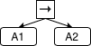
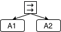
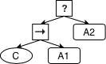
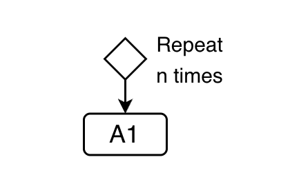

<div class="table-responsive">
  <table class="table table-bordered table-sm align-middle rq1-table">
    <caption class="text-start text-center">BT control structures</caption>
    <thead class="table-light">
      <tr>
        <th>Sequential</th>
        <th>Parallel</th>
        <th>Conditional</th>
        <th>Loop</th>
      </tr>
    </thead>
    <tbody>
      <!-- BT -->
      <tr>
        <td>From left to right as children of the Sequence</td>
        <td>Parallel Node</td>
        <td>Combination of Fallback, Sequence, and Condition Nodes</td>
        <td>Decorator (n-repetitions)</td>
      </tr>
      <tr>
        <td></td>
        <td></td>
        <td></td>
        <td></td>
      </tr>
      <tr>
        <td>A1 is executed before A2</td>
        <td>A1 and A2 are executed in parallel</td>
        <td>If C is true, then A1 is performed; if C is false, then A2 is performed</td>
        <td>The repeat decorator executes A1 for at most n-times</td>
      </tr>
    </tbody>
  </table>
</div>